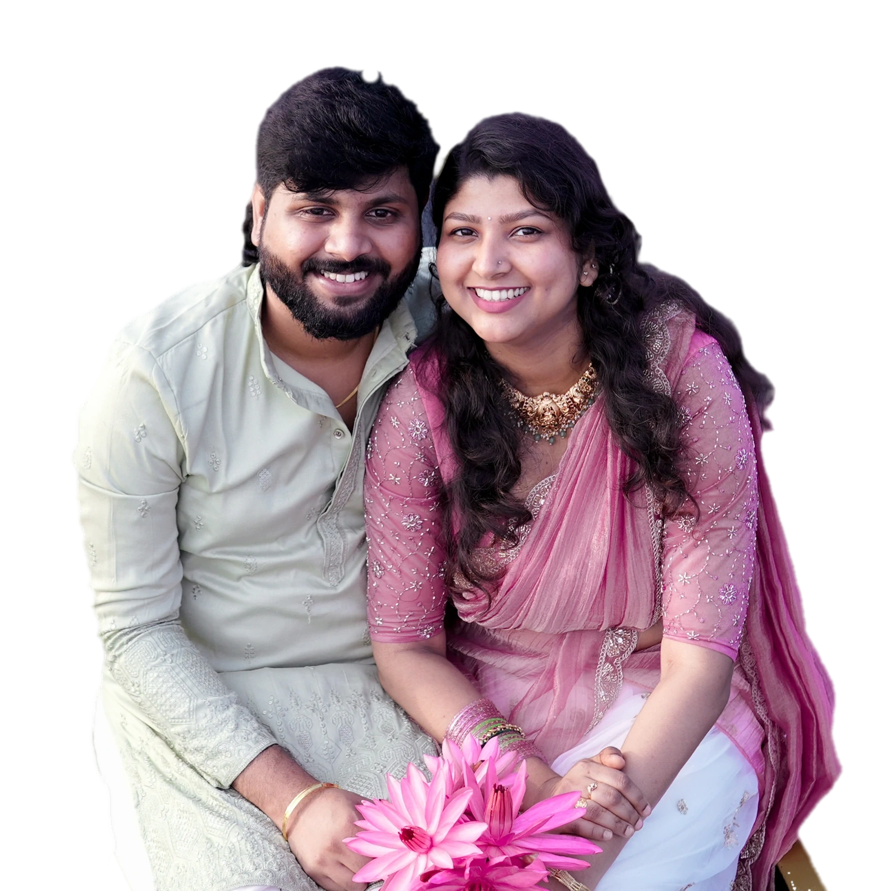

Desktop · 1440px (scaled to fit)
Mobile · 390px
CoverHero.css:46, 293, 305, 313), plus a literal filter: blur(.45px) (:158) and sepia/saturate colour grading on the procession (:255, :280). The result looks washed out.:1110–1122), about 2.6:1 contrast on the ivory ground. "Lalith&" runs together with no space.:563) and "Scroll" are 9–10px (:875, :1105), and the scroll cue is not a 44px target.min-height:100svh (:21, :349) stretches the cover on tall screens and squeezes it on short ones. The content should set the height.variables.css intends (--fs).#eae1d8, matching the existing art.| Sharp: no blur/tint/grain/filters | pass |
| Aligned: one centre axis | pass |
| Balanced pairs: procession left ↔ elephant right | pass |
| No wasted space: content-height, no 100svh | pass |
| Clear hierarchy: photo → names → invitation → date | pass |
| Text/image proportion | pass |
| Desktop + 320/375/390/430 | pass |
| Matches the system | pass |

We cordially invite you to celebrate our wedding and reception with the blessings of our families and elders.
Your presence would make our celebration truly special.
Save the date
November 29, 2026